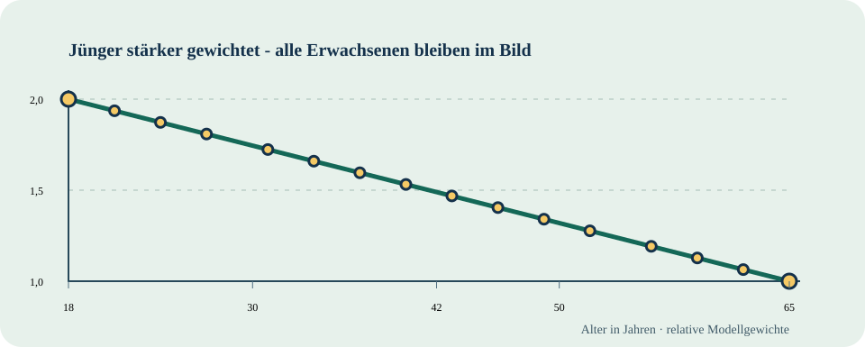

Zwei Phasen
Je sechs Monate. Die zweite Phase braucht eine eigene bewusste Entscheidung, keinen automatischen Neustart.
JURI-THESIS / Ein Vorschlag für Brühl
Man nehme an, es ist Montagmorgen in Brühl: Dreißig Menschen stehen vor einem neuen Abschnitt – Ausbildung, Gründung, Sorgearbeit oder einem anderen Lebensweg. Die Idee: Jede Person erhält sechs Monate Entwicklungszeit, Mittel für ihren konkreten Bedarf und die Freiheit, den nächsten Schritt selbst zu entwerfen. Später im Leben soll eine zweite Phase möglich sein.
Die Antwort ist für jeden Menschen anders. Jemand braucht einen funktionierenden Herd, jemand anderes Mobilität zwischen Familie und Arbeit. Eine dritte Person will ein großes Vorhaben selbst finanzieren und aufbauen. Solche Wünsche sollen erst sichtbar werden, bevor über passende Mittel entschieden wird. Ein fertiger Lebenslauf muss die Idee nicht vorab beweisen.
Die Person braucht einen funktionierenden Herd, während ihr Lernweg startet. Liegt der Ersatz innerhalb ihres bereits finanzierten persönlichen Rahmens, wird die Anfrage nach veröffentlichten Regeln zügig bearbeitet. Ein Mensch prüft Fehler und Ausnahmen.
Kinderbetreuung, Arbeit und Weiterbildung passen nur mit verlässlicher Mobilität zusammen. Auch ein Auto kann als Anliegen geprüft werden: passend zur Person, zu Alternativen, Zweck und vereinbartem Rahmen.
„Gebt mir einmalig zwei Millionen Euro; damit organisiere ich mein Vorhaben selbst.“ Auch dieser Wunsch bekommt einen sichtbaren Antragsweg. Wird die Einmalzahlung nach eigener Finanzierungs- und Zweckprüfung bewilligt, ersetzt sie spätere frei abrufbare Zusatzwünsche aus derselben Programmlinie.
Man kann eine der drei Türen öffnen: Die Person bestimmt die Richtung. Über Geld und Sachmittel entscheiden zuvor veröffentlichte Regeln und verantwortliche Menschen. Die drei Türen sind erfundene Beispiele eines vorgeschlagenen Piloten.
Die Entwicklungszeit soll eine echte Wahl eröffnen, bevor eine Krise die einzige Eintrittskarte wird. Die zwei Phasen können zeitlich getrennt liegen. Eine Person kann in der ersten Phase lernen und in der zweiten etwas völlig anderes brauchen. Die Zeit wäre freiwillig; ein Wechsel des Lebenswegs darf nicht als Defekt gelten.
Je sechs Monate. Die zweite Phase braucht eine eigene bewusste Entscheidung, keinen automatischen Neustart.
Die langfristige Vision ist allgemein. Ein örtlicher Pilot mit begrenzten Plätzen ist nur ein Test dieser Idee.
Lernen, Alltag, Mobilität oder ein großes Vorhaben: Die Person beschreibt, was sie in dieser Zeit möglich machen will.
Die vier Wirkungswege machen Alltag, Familie, Geldfluss und mögliche Folgen konkret. Das Wirtschaftslabor rechnet die mögliche Wirkung nach sechs und zwölf Monaten. Die Chancenreise spielt den Bewerbungsweg durch.
Hier steht mein persönlicher Antragspunkt: Ich wünsche mir einen fortlaufenden Ankerplatz, solange ich die Idee entwickle und diesen Raum brauche. Dazu kommen drei noch unbestimmte Plätze innerhalb der 30er-Runde: Zwei Menschen könnte ich in jedem Jahr neu oder erneut vorschlagen; die dritte Einladung zur Nominierung soll eine bislang ungenannte Person erhalten. Diese Person wurde noch nicht gefragt. Erst ihr eigenes Ja könnte daraus eine gemeinsame Entscheidung machen.
Ich wünsche mir fortlaufende Mitwirkung. Eine weitere Runde ist eine neue, sichtbare Entscheidung.
Beantragt · nicht bewilligtIch möchte hier eine Frau meiner Wahl vorschlagen. Wen ich frage und ob sie teilnimmt, entscheidet sich erst später.
Noch ohne Person und BetragIch kann jährlich einen weiteren Menschen vorschlagen – auch jemanden, den ich heute noch nicht kenne.
Noch ohne Person und BetragEine eingeladene Person könnte freiwillig das dritte Vorschlagsrecht übernehmen. Ihre Identität und ihre Wahl bleiben offen.
Einladung und Zustimmung offenZwei Sitze leuchten im Dunkeln und tragen noch keinen Namen. Wer sie schon als besetzt verkauft, hat die Geister selbst hineingesetzt.
Zunächst x = offen. Für einen möglichen sechsmonatigen Weg werden sechs individuell gewünschte Monatsbeträge, begründete Anschaffungen, Projektmittel und Begleitung getrennt notiert. Erst die Person beschreibt ihren Plan; ein zuständiger Träger prüft und finanziert ihn. Eine reine Beispielrechnung wäre 6 × 5.000 € + 3.000 € Projektmittel = 33.000 € direkte Mittel für einen Weg, vor Begleitung. Sie setzt weder den Betrag eines anderen Menschen noch ein Durchschnittsbudget fest. Die vollständige Kostenspur ansehen ↗
Bei einer neuen Runde bleiben die Plätze vier von dreißig: Wiederwahl oder Austausch ersetzt eine frühere Belegung; niemand wird doppelt gezählt. Der Entwurf bucht außerdem 2 Suchplätze für erschwerte Übergänge mit 18, 5 für 32 bis 35, 2 durch junge Alleinerziehende mitzugestaltende Plätze, 2 Übergänge nach Haft und 15 weitere offene Wege. Das ergibt 4 + 2 + 5 + 2 + 2 + 15 = 30. Die 26 außerhalb des Antrags bleiben für andere erreichbar.
Der Ankerplatz soll kontinuierliche Aufbauarbeit ermöglichen. Dafür kommen eine eigene bezahlte Forschungsrolle oder eine begründete Kategorie innerhalb der 30 Plätze infrage. Jede nominierte Person entscheidet selbst über ihre Teilnahme. Ein unabhängiges Verfahren müsste Rolle, Geld und faire Auswahl regeln. Die stärkste Gegenfrage und Gestaltungswege ↗
Der aktuelle Entwurf erlaubt die erste sechsmonatige Phase ab 18; wer sie mit 30, 45 oder später noch nicht genutzt hat, verliert sie allein wegen des Alters nicht. Die zweite Phase wird ab 50 vorgeschlagen. Ein echter Pilot könnte zunächst nur einzelne sechsmonatige Plätze testen und muss festlegen, wie Rückkehrende eingeplant werden.

Die neue Diskussionskurve gibt jüngeren Erwachsenen deutlich mehr Gewicht und wird mit zunehmendem Alter flacher: w(a)=1+((65-min(a,65))/47)^2 für ganze Alter ab 18. Bei 18 liegt der Modellwert bei 2, bei 65 bei 1. Dazwischen bleibt jedes Alter enthalten; auch ab 65 bleibt das Gewicht positiv. Die 16 Punkte zeichnen die Kurve, sie verteilen keine 16 Plätze. Ein Modellgewicht allein sagt noch nichts über eine individuelle Aufnahmechance.
Ein echter Zugang muss konkrete Bedarfe erkennen: Barrieren, Sorgearbeit, regionale Wege und eigene Ziele. Das Alter allein erzählt diese Geschichte kaum. Das Rechtslabor stellt der Kurve eine altersneutrale Auswahl gegenüber.
Sechs Monate Zeit allein reichen für viele Vorhaben nicht. Im Vorschlag kann eine Person deshalb Geld für den Alltag, eine konkrete Anschaffung, Mobilität, Lernen oder ein eigenes Projekt beantragen. Sie nennt ihren Bedarf und ihr Ziel; ein zuständiges Team prüft den Antrag und die Finanzierung. Für jeden angenommenen Menschen wird vor der ersten Zahlung festgelegt, was bewilligt ist und wie weitere Wünsche entschieden werden.
Eine vereinbarte Zahlung über die sechs Monate schafft Zeit. Ihre Höhe hängt vom individuellen Bedarf und vom finanzierten Programm ab.
Ein Herd, Kinderbetreuung, Lernmittel oder ein Auto können begründet beantragt werden. Innerhalb vorab bewilligter Mittel könnte eine kleine Anfrage schnell geprüft werden; bei Ausnahmen entscheidet ein Mensch.
Eine Person kann auch eine große Einmalzahlung für ein eigenes Vorhaben vorschlagen – beispielsweise zwei Millionen Euro. Das wäre ein individueller Antrag mit eigener Entscheidung und Finanzierung, keine automatische Auszahlung.
Eine bewilligte Einmalzahlung könnte spätere Zusatzwünsche aus derselben Programmlinie ersetzen. Bestehende Ansprüche werden getrennt geprüft. Das Ziel ist eine echte zusätzliche Chance; dafür braucht es klare Regeln für Sozialleistungen, Steuer und Versicherung.
Die rechtliche Gegenprobe und die Paragrafen im Rechtslabor ↗Eine Person baut eine praktische Fähigkeit aus. Relevante Nachweise sind Lernschritte und ein späterer Anschluss, nicht ein vorab versprochener Job.
Eine andere stabilisiert Familie, Wohnen oder die eigene Gesundheit. Die Phase braucht Schutz vor einer heimlichen Pflicht zur öffentlichen Leistungsschau.
Ein Vorhaben kann Material, Beratung und Zeit verlangen. Projektkosten, Umsatz, Gewinn und gesellschaftlicher Nutzen werden getrennt erfasst.
Wer in einer Pilotrunde keinen Platz bekommt, soll eine verständliche eigene Rückmeldung erhalten und sich später neu bewerben können.
Die Demo zeigt erfundene Wege. Eine echte Bewerbung würde erst mit einem verantwortlichen Träger beginnen.
Brühl ist ein vorgeschlagener Gesprächsraum, kein bestätigter Träger. Ein begrenzter Pilot könnte 30 Plätze pro Halbjahresrunde als Kapazitätsannahme nutzen. Diese Zahl macht die Idee prüfbar, begründet aber keinen Ausschluss als langfristiges Ziel und keine Zusage der Stadt.
Für einzelne Bausteine gibt es bereits Regeln: Weiterbildungsförderung und einen sechsmonatigen Gründungszuschuss. Das Rechtslabor zeigt, was ein breiterer Pilot zusätzlich bräuchte.
Reale Bausteine und zwölf Gegenfragen ansehen ↗Drei Menschen. Drei verschiedene Wege. Derselbe Raum, das eigene Leben neu zu gestalten.
Man nehme an, eine Person erhält für ihren Weg beispielhaft 5.000 € pro Monat: sechs Monate, in denen die Miete nicht jeden Gedanken verschluckt. Die Person nimmt sich Zeit, eine Idee zu prüfen, entwickelt eine App, schreibt an einem Buch oder reist zu Menschen, von denen sie lernen kann. Vielleicht braucht sie zuerst Ruhe, sucht Hilfe bei einer Depression und gewinnt wieder Boden für den Alltag. Sie muss nicht alles zugleich schaffen. Aus einer offenen Zeit kann ein konkreter nächster Schritt werden – für sie selbst und vielleicht auch für ihre Region.
5.000 € sind hier der Betrag dieser einen Geschichte, keine feste Zahlung für alle. Eine zweite Person kann andere Mittel, Begleitung oder mehr Zeit brauchen. Die Frage nach zehn Jahren lautet: Welche Wege wurden wirklich möglich, und was haben die Menschen selbst daraus gemacht?
Chantal stellt die unbequeme Frage. Eine vermögende Person erhält durch reiche Eltern oder vorhandenes Kapital keinen Vorrang. Wird sie nach denselben offengelegten Regeln ausgewählt, kann sie für die gesamte Phase nur einen symbolischen Euro aus dem Programm nehmen und eine eigene Challenge anbieten: Sie baut mit belegten, rechtmäßig verfügbaren eigenen Mitteln etwas Neues auf. Sie zeigt, was sie eingebracht hat, was zusätzlich entstanden ist und wem es nützt. Der eine Euro und das private Kapital bleiben getrennte Spuren. Eine Firma, die schon vorher möglich war, wird nicht nachträglich als Wunder dieses Euros verkauft.
Eine andere Person benötigt vielleicht eine barrierefreie Wohnung, Kinderbetreuung, Lernmittel, gesundheitliche Hilfe oder Ausstattung für ein Vorhaben. Ihr Weg soll nicht an der Beispielzahl der ersten Geschichte enden. Die benötigten Mittel werden für ihre Situation begründet, finanziert und mit ihr vereinbart. So konkurrieren die Geschichten um faire Plätze und echte Möglichkeiten – nicht um die schönste Zahl auf einem Scheck.
Damit die Challenge glaubwürdig bleibt, werden öffentliche Zahlungen, private Mittel und neu entstandene Ergebnisse getrennt dokumentiert. Auswahl, Mittelherkunft und Interessenkonflikte gehören zu den Regeln, die ein Träger vor dem Start festlegen müsste. Wie sich solche Regeln gestalten lassen ↗
Der Gedankenversuch setzt für 13 der 26 offenen Plätze einen messbaren zusätzlichen wirtschaftlichen Rückfluss an. Für die anderen 13 und für die vier gesonderten 1+3-Plätze bleibt die Wirkung offen. Die Geldrechnung bewertet Ergebnisse, niemals den Wert eines Menschen. Schäden an Menschen benötigen eigene Aufklärung und Hilfe.
Die Rechnung nutzt vier Größen: C = durchschnittliche vollständige Kosten je Platz über alle 30; R = zusätzlich belegter Nutzen je einem der 13 Plätze; F = zusammen belegter Zusatznutzen der vier 1+3-Plätze; H = zusätzlich belegte Folgekosten. Damit lautet der enge Geldsaldo 13 × R + F − 30 × C − H. Für jeden Nutzen braucht es einen Vergleichszustand. Geldumlauf, Umsatz, Steuern und soziale Teilhabe werden getrennt betrachtet.
13 × 2C = 26C. Ohne gemessenen Zusatznutzen der vier gesonderten Plätze fehlen gegenüber 30C zunächst 4C, zuzüglich eines etwaigen belegten H. Für einen ausgeglichenen Geldsaldo müsste F ≥ 4C + H belegt werden.
13 × 5C = 65C. Gegen 30C ergibt die frei gesetzte Annahme 35C − H. Schon im Geldmodell ist das Ergebnis ohne Messung von H offen; ein Schaden an Menschen wäre damit ohnehin nicht „bezahlt“.
Bei 30 Plätzen sind 80 % genau 24 Personen. „Mehr als 80 %“ wären mindestens 25; dann hätten höchstens fünf in diesem engen Maßstab einen gemessenen Rückfluss. Wenn F = 0 gilt und genau fünf Plätze einen solchen Rückfluss haben, müssten diese fünf im Mittel mindestens (30C + H) / 5 zusätzlich belegen, um Geldkosten und bewertbare Folgekosten zu decken. Eine Wahrscheinlichkeit für diesen Fall ist nicht bekannt.
Vor einem echten Pilot müssten Kosten, Vergleichsgruppe, Messzeitraum, Verdrängung, zusätzliche Ausgaben und soziale Ziele feststehen. Das Projekt wäre nicht erst dann wertvoll, wenn Menschen „ihr Geld einholen“; umgekehrt ist ein behaupteter Karma-Effekt keine Finanzierungsquelle. Der offene Rechenvertrag bewahrt die Annahmen.
Bis hierhin gelesen? Es gibt noch eine Idee.
Der Anschnallmodus ist ein freiwilliger Schutz- und Begleitweg für einen Menschen, der während der Entwicklungszeit in Abhängigkeit, Ausbeutung, Schulden, Gewalt oder eine mögliche Straftat geraten ist und herauswill. Die sechsmonatige Frist darf kein Abbruch der erreichbaren Hilfe sein. Die betroffene Person soll eine unabhängige Ansprechstelle, psychosoziale Beratung und bei strafrechtlichem Risiko Zugang zu eigener anwaltlicher Beratung finden können. Auch ein 18-jähriger Mensch mit einer Straftatgeschichte oder jemand nach Haft kann einen Entwicklungsweg brauchen. Zwei Suchplätze für Menschen nach Haftentlassung kommen deshalb neu in die 30er-Rechnung. Ein freiwilliger Pilotplatz wäre eine mögliche Ergänzung zu zuständigen Hilfen; über Ermittlungen, Strafe oder Haft entscheidet weiterhin das dafür vorgesehene Verfahren. Ob und wie Hilfe über das Programmende hinaus finanziert wird, muss ein Träger vorab klären.
Der zugespitzte Ausdruck „sechs Monate Narrenfreiheit“ meint: nicht alles richtig machen müssen, neue Freunde und Wege finden und auch über eigenes Fehlverhalten ehrlich sprechen dürfen, ohne vom Hilfsteam als „böser Mensch“ abgeschrieben zu werden. Für diese Offenheit braucht es eine klare Zusage, was das Team vertraulich halten kann und was nicht. Eine pauschale Zusage von Straffreiheit, Nichtweitergabe aller Informationen oder Ersatz eines Strafverfahrens könnte das Team nicht geben. Bei möglicher eigener Straftat muss eine Person die Möglichkeit haben, zuerst mit einer selbst gewählten Verteidigung zu sprechen. Wenn ein Pilot trotz Hilfe scheitert oder Schaden entsteht, wird geprüft, welche Unterstützung, Belastung oder Gestaltung übersehen wurde; das Ergebnis steht nicht schon mit dem Wort „Karma“ fest.
Niemand muss sich als „böse“ einstufen lassen. Die Person beschreibt, welche Unterstützung sie braucht und welche Informationen sie teilen will. Vertraulichkeit und ihre gesetzlichen Grenzen werden vor dem Gespräch erklärt.
Eine unabhängige Stelle kann Schutz, Schuldner-, Sucht- oder psychosoziale Hilfe vermitteln. Bei strafrechtlicher Betroffenheit gehört eine selbst gewählte Verteidigung dazu; die Projektleitung spielt weder Polizei noch Gericht.
Akute Gefahren oder gesetzliche Pflichten folgen dem jeweils zuständigen Verfahren. Das Pilotteam erhält keine polizeilichen Befugnisse und verspricht keine pauschale Straffreiheit.
Eine frühere Zuschreibung wurde korrigiert: Die berichtete Beobachtung betrifft eine Person, die im Nachtleben auf eigene Weise mit anderen ins Gespräch kommt und dabei möglicherweise von sich aus offen redet. Auch den eigenständigen Erwerb von Kokain nannte er als Teil dieses Beispiels. Das ist seine berichtete Beobachtung, keine zugesicherte Wirkung und kein Verfahren des Piloten. Freiwillige Hilfe und ein offenes Gespräch bleiben der Kern dieses Kapitels; die rechtliche Gegenprobe steht im Rechtslabor.
Die umsetzbare Frage an einen künftigen Träger lautet: Wie bleibt nach einer schwierigen Wendung ein sicherer, freiwilliger Ausweg offen, ohne Rechte, Datenschutz oder Strafverfahren zu verwischen? Das Rechtslabor prüft die Gegenposition ↗
Diese Webausgabe ist ein öffentlicher Konzeptprototyp. Sie ist weder Gesetz, Bewerbung noch Förderbescheid. Die Stadt bestätigte den Eingang, sah aber keine Kapazität für Prüfung und Begleitung. Der Initiator meldete anschließend eine Eingabe an die Landesregierung NRW; deren Antwort ist hier noch nicht dokumentiert. Eine politische Forderung und die Norm, die sie erst ermöglichen müsste, bleiben getrennt. Die rechtlichen Primärquellen und die stärksten Gegenpositionen stehen im Rechtslabor. Das ältere Markdown-Dokument bleibt als früherer editierbarer Entwurfsstand erhalten; zum Lesen ist diese Webfassung gedacht.